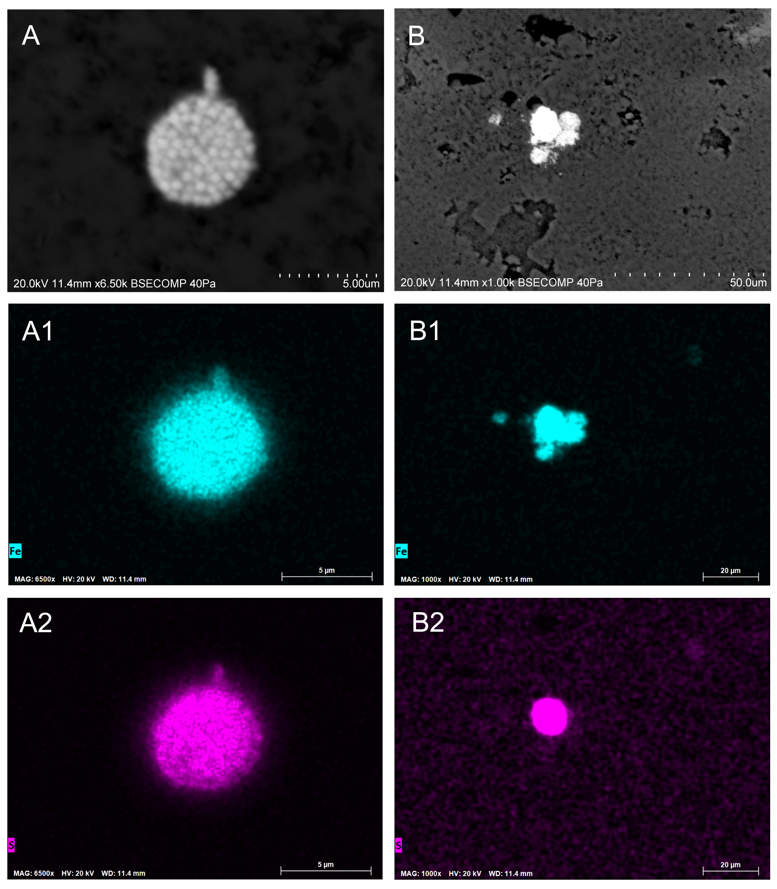
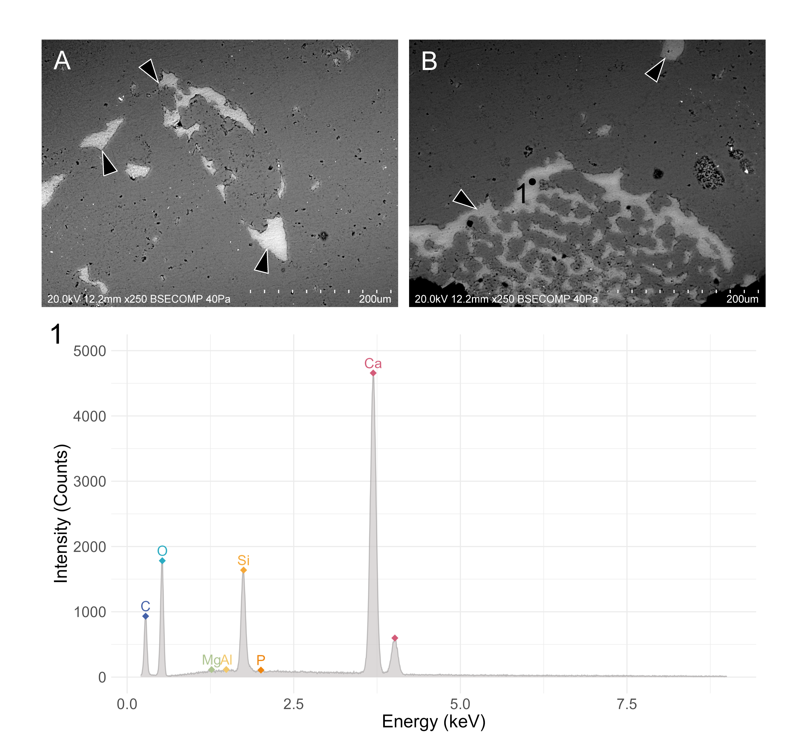
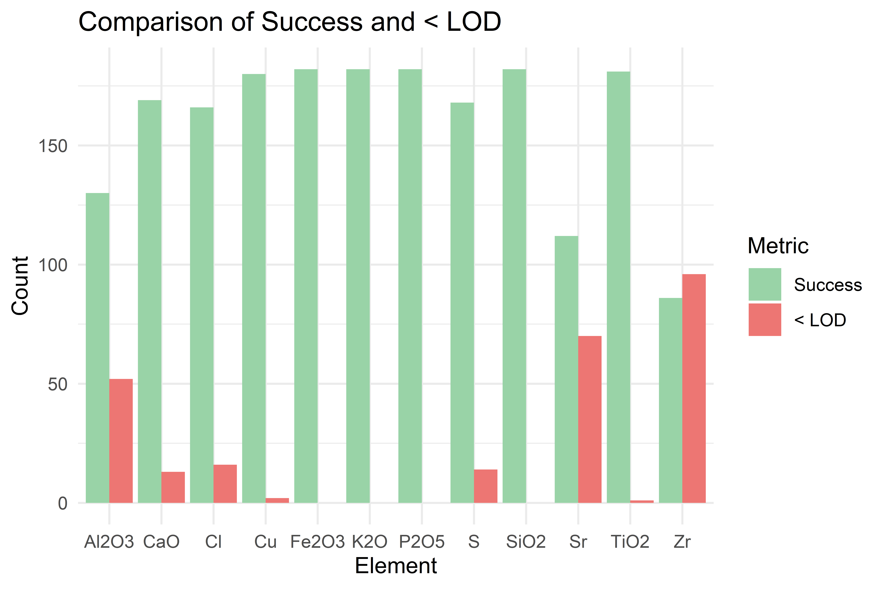

| a) Geological | XRD | SEM-EDS | pXRF |
|---|---|---|---|
| LJW | 12 | 14 | 40 |
| TW | 1 | 1 | 2 |
| UJW | 1 | 4 | 4 |
| MJE | 5 | 10 | 14 |
| UJE | 4 | 10 | 6 |
| CPT | - | - | 16 |
| UCA | - | - | 12 |
| Total (a) | 23 | 39 | 94 |
| b) Archaeological | XRD | SEM-EDS | pXRF |
| T1 | - | 3 | 5 |
| T2-5 | - | 11 | 31 |
| T6 | - | 4 | 13 |
| T7 | - | 5 | 7 |
| T8 | - | 1 | 8 |
| T9 | - | 1 | 3 |
| T10 | - | 2 | 3 |
| T11 | - | - | 2 |
| Total (b) | - | 27 | 72 |
| Total (a+b) | 23 | 66 | 166 |
Within chert: a multi-technique mineral and geochemical approach to the study of chert of southwestern Iberia
Abstract
Recent advances in the study of chert in the Algarve have applied macroscopic and petrographic methods to geological samples from regional chert-bearing formations and archaeological materials from the Upper Palaeolithic assemblages of Vale Boi to explore hunter-gatherer mobility and technological organisation. However, key questions regarding human behaviour, mobility, and raw material selection remain unanswered, largely due to the limitations of macroscopic and petrographic methods in fully characterising the cherts. This study expands the characterisation of both geological and archaeological samples through the application of additional analytical methods, aiming to address critical research questions and assess the potential of these methods for chert characterisation in the Algarve and at Vale Boi. The results demonstrate that a multi-layered analytical approach is most effective for chert characterisation. While the applied geochemical methods yield strong results in distinguishing between cherts of different geological periods, they struggle to differentiate between cherts from the same period but different epochs. By building on previous analyses, this research contributes to broader discussions on lithic procurement strategies, human mobility, and exchange networks in southwestern Iberia during the Upper Palaeolithic.
Keywords
Geoarchaeology; XRD; SEM-EDS; pXRF
Keywords: Geoarchaeology; XRD; SEM-EDS; pXRF
Introduction
The study of lithic raw materials has been a key topic in archaeology, as stone tools are ubiquitous in the archaeological record and identified as key element in hunter-gatherer cultural, economical and social organisation (Andrefsky, 1998, 1994; Gamble, 1999; Odell, 2006; Shott, 1986; Tostevin, 2012). Among these materials, chert played a crucial role in lithic tool production, making its study, characterisation and sourcing a key issue in archaeological research, particularly in Upper Palaeolithic (UP) assemblages (e.g., Larick, 2011; Brandl, 2016, 2013; Eixea et al., 2023; Jensen, 1988; Luedtke, 1979; Soto et al., 2018; Tomasso et al., 2019). Determining the origins of chert artefacts reveals patterns of raw material availability and provides valuable insights into prehistoric procurement strategies, territorial behaviours, and long-distance exchange networks over time (Ambrose and Lorenz, 1990; Binford, 1980; Kuhn, 1994; Surovell, 2009; Torrence, 1986; Whallon, 2006).
Chert sourcing studies have frequently relied on macroscopic and petrographic techniques, providing valuable insights into raw material formations and procurement by hunter-gatherer groups (e.g., García-Simón and Domingo, 2016; Gómez de Soler et al., 2020; Matias, 2016; Tomasso et al., 2019). While these methods remain essential in lithic sourcing, they can also have limitations. Their reliance on physical appearance and petrographic homogeneity can make it difficult to distinguish geologically similar cherts, especially in cases of long-distance procurement. Moreover, although macroscopic analysis is non-destructive, thin section petrography requires destructive sampling, raising concerns about the preservation of archaeological materials (Brandl, 2016; Luedtke, 1992).
Recent research has increasingly incorporated geochemical and spectroscopic techniques to address these challenges and refine chert sourcing methodologies. Luedtke (1978, 1979, 1992) highlights the value of chemical data combined with multivariate statistical analysis, while Brandl (2016) integrates petrographic and geochemical approaches within the Multi-Layered Chert Sourcing (MLA) framework.
As seen in the previous chapters, we have applied macroscopic and petrographic approaches to the study and characterisation of cherts from the Algarve region (Belmiro et al., 2023, 2025). However, the chert-bearing formations from the Algarve region remain largely unexplored through other analytical techniques.
An exception would be the Lower Jurassic (Carixian) and Upper Jurassic (Kimmeridgian) limestone and dolomitic limestone formations from western Algarve (Rocha et al., 1979), which show previous mineral and geochemical characterisations (Ribeiro, 2005). However, given the geological scope of the study, only 3 chert samples from the Carixian and 3 samples of the Kimmeridgian were analysed. While providing a basis for mineral and chemical composition of these cherts, it is key to expand the analysis to a more robust sample size.
Similarly, the UP chert assemblages from the site of Vale Boi have yet to be further characterised through geochemical methods. These may be key to address open research topics and questions by recent studies focusing on chert provisioning and selection during the UP at Vale Boi.
For example, the Lower Jurassic (Carixian) cherts, located near Vale Boi (<20 km) show macroscopic and petrographic similarities to the Middle Jurassic (Malhão formation) cherts located eastwards (>70 km). This makes the differentiation between specific chert formations unclear (Belmiro et al., 2023). Making this distinction is critical for understanding regional mobility patterns and whether local cherts at Vale Boi are a mix of local (<30 km) and regional (30-120 km) resources (Herrero-Alonso et al., 2020; Tarriño et al., 2015).
Questions regarding nodule selection may also be further explored to characterise close-range chert procurement. This is particularly relevant for the Lower Jurassic (Carixian) cherts, which show different degrees of dolomitization, with a clear impact on the knapping quality. By further characterising the mineral and chemical composition of geological cherts from all outcrops and macroscopic variability, and comparing with the archaeological samples, we may explore behaviours related to selection associated to selection associated with nodule quality (sensu higher silicification).
Additionally, evidence suggests that non-local materials and products were frequently introduced into the archaeological site, indicating complex long-distance procurement dynamics. However, these findings were based on macroscopic and petrographic studies, which leaves room for further characterisation to strengthen source attributions and test current hypotheses. This is especially relevant for archaeological chert types for which we did not have a direct comparison regarding petrography, as for example T7 possibly originating from the Betic systems (south Spain) or other types for which a source could not be identified (T9-11).
To further explore these questions and topics, this study employs an integrated analytical approach to geological chert samples from local, regional, and non-local (allochthonous) formations, as well as archaeological assemblages from the UP levels of Vale Boi to accomplish the following goals:
Expand the characterisation of chert samples from the Algarve region, including data on their mineral and chemical composition. This will deepen our understanding of the characteristics of siliceous raw materials across the region and make this information accessible to the scientific community through its integration in our online lithotheque (https://lusolit.icarehb.com).
Assess the potential of mineral and chemical analyses to distinguish between macroscopic and petrographically similar chert samples from the Lower Jurassic Carixian (west Algarve) and Middle Jurassic Malhão (east Algarve) formations.
Use geochemical methods to further characterise the archaeological samples, as well as geological samples from other regions of interest (e.g., Cretaceous cherts from central Portugal and cherts from the Betic Systems of southern Spain). This will enable us to compare the geological and archaeological data, testing, corroborating, and strengthening the petrographic and macroscopic source attributions of archaeological chert types. Additionally, comparing local geological and archaeological data may provide valuable insights into the selection of nodules for knapping, especially considering the known process of dolomitization in the Lower Jurassic outcrops.
Test the potential of various techniques and approaches to enhance the interpretation of archaeological chert raw materials and human mobility patterns. Specifically, we will assess whether these methods effectively characterise and differentiate between chert types from various formations, both regional and long-distance, and enable accurate source attribution of archaeological lithic artefacts.
To accomplish these goals, we apply three different methods: X-Ray Diffraction (XRD) to regional Algarve chert samples; Scanning Electron Microscopy coupled with X-Ray Microscopy (SEM-EDS) to regional Algarve chert samples and all identified chert types from the UP sequence at the Terrace of Vale Boi; and portable X-Ray Fluorescence (pXRF) to all previously mentioned samples, including additional chert samples from central Portugal (Rio Maior region) and southern Portugal (Betic systems).
By refining the characterisation of chert in the region, improving source attribution from archaeological lithic assemblages, and identifying the strengths and weaknesses of different analytical methods, this research contributes to broader discussions on lithic procurement, human mobility, dissemination of products and exchange networks in southwestern Iberia during the UP.
Materials and methods
Given the particularities of each analytical technique used in this study, availability of samples and level of destructiveness on the artefacts, and research questions, different samples were used in each method. These methods, their application in chert characterisation studies, especially in Iberia, and summarised methodology are further discussed below.
Table 1 shows the samples used for each method. These included chert geological samples from different regions of Iberia, with a focus on the Algarve region. The Algarve materials include geological samples from the western and eastern Algarve basin collected from 2021 and 2022 prospection works (Belmiro et al., 2023). The western groups include the Triassic formation cherts (fibrous chalcedony), also identified as chalcedony (Triassic west, hereon TW), the Lower Jurassic (Carixian) formation (Lower Jurassic west, hereon LJW) and Upper Jurassic (Kimmeridgian) formations (Upper Jurassic west, hereon UJW) (Ribeiro, 2005; Rocha et al., 1979; Terrinha et al., 2006).
The eastern groups include the Middle Jurassic (Malhão) formation (Middle Jurassic east, MJE hereon) and the Jordana formation (Upper Jurassic east, hereon UJW) (Manuppella et al., 2007; Terrinha et al., 2006).
Other geological samples included in the study were the central Portugal (Rio Maior region) cherts from the Cretaceous formation (hereon CPT; Matias (2016)), previously prospected and collected by previous researchers (Pereira et al., 2016b), and the southern Portugal cherts from the Upper Jurassic of the Betic systems (Rodríguez et al., 2011) (hereon UCA), obtained from the lithotheque of the Unit of Geoarchaeology and Archaeometry Applied to Historic Artistic and Monumental Heritage (University of Cadiz).
The archaeological samples used for the study are from the archaeological site of Vale Boi, mainly the Terrace and Shelter areas. The samples were chosen based on the groups identified in our previous works (Belmiro et al., 2025), with T1-5 archaeological cherts corresponding to local types, T6 possibly originating from central Portugal Cretaceous formation, T7 and T9 with sources possibly from southern Portugal Betic systems and T8 and T10-11 without a current identified source.
For further reproducibility and replicability and working towards the goal of open science (Marwick, 2017), all analyses were performed through R Studio. The R code used for the analysis, datasets, and visual representations presented in this paper is available through our online repository (https://doi.org/10.17605/OSF.IO/DBFT2). We utilised the rrtools package by Marwick et al. (2018) to create a research compendium and produce a reproducible journal article. The repository includes the complete set of raw data used in the analysis, along with a custom R project (Wickham, 2015) that contains the necessary code to generate all tables and figures. To facilitate broad reuse, the code is provided under the MIT license, the data under CC‐0, and the figures under CC‐BY.
X-Ray Diffraction (XRD)
X-ray diffraction (XRD) is a widely used laboratory technique for examining the atomic structure of crystalline materials (Adams, 2005). Most of the minerals in siliceous rocks are crystalline in nature, meaning their atoms are arranged in a three-dimensional repeating pattern. The crystal structure is defined by the arrangement of atoms within a single unit cell, as well as the cell’s size and shape.
XRD works by directing a beam of X-rays onto a crystal, causing the rays to diffract and produce a characteristic diffraction pattern. The d-spacings—the distances between parallel planes of atoms in the crystal lattice—are derived from the angular positions and intensities of the diffracted beams. These d-spacings serve as a unique fingerprint for crystalline compounds, allowing for mineral identification (Marshall and Fairbridge, 1998).
Although powder-XRD is a destructive technique, it has been used alongside petrographic characterisation (thin section analysis) to gain a comprehensive understanding of the petrographic and mineral composition of lithic raw materials, such as chert, in both geological and archaeological contexts. This combined approach enables comparisons with potential archaeological implications, particularly in raw material sourcing studies in the Iberian Peninsula (e.g., Columbu et al., 2023; Gómez De Soler et al., 2023; Ortega et al., 2018).
This study utilised X-ray diffraction (XRD) to determine the mineral composition of 23 geological powdered samples of chert from the Algarve region (Table 1). These samples represent at least one specimen from each outcrop, with a focus on primary and sub-primary locations across all chert-bearing formations in the region. A detailed description of the sample preparation process is available in our online research repository (Online resource 1).
The samples were analysed using a Bruker AXS D8 Discover XRD with the Da Vinci design, equipped with a Cu Kα source operating at 40 kV and 40 mA, and a Lynxeye 1D detector. Scans were conducted from 3° to 75° 2θ, with a 0.05° 2θ step, at the HERCULES Laboratory, University of Évora.
Preliminary phase identification was performed using Diffrac.Suite™ (Bruker) and further refined with Profex (version 5.2.9) after converting raw files using PowDll Converter. All data processed in Profex was organised and plotted in R Studio, where visual representations of the XRD data were also generated.
Three additional samples (SP21, SP40, and a geological sample from the Triassic outcrop of Western Algarve) had previously been sent for XRD analysis and interpretation at Geociencias Barcelona-CSIC (Table 1). The analysis was conducted using a Bruker D8-A25 XRD, equipped with a Cu source (wavelength λ = 1.5405 Å) and an ultra-fast PSD detector (Lynxeye). The diffraction spectrum data were interpreted using the Diffrac.Suite software by Bruker by a technician.
Scanning Electron Microscopy-X-Ray Microscopy (SEM-EDS)
Scanning electron microscopy coupled with energy-dispersive X-ray spectroscopy (SEM-EDS or SEM-EDX) provides various types of data by combining SEM imaging with elemental analysis. SEM is an electron microscopy technique that generates high-resolution images by directing a beam of electrons onto a specimen’s surface. As the electron beam interacts with the sample, it scatters as backscattered electrons and emits X-rays. As different atomic elements release characteristic X-ray at specific energies, it is possible to identify the elements present in the sample (Kirkbride, 2000) using an energy dispersive detector (EDS).
Although SEM-EDS is a versatile and efficient method, EDS has a relatively high chemical analysis limit of detection (Kirkbride, 2000).
Despite this limitation, EDS coupled with SEM has been widely used alongside other techniques, such as petrography, XRD, and XRF, to characterise geological and archaeological lithic resources, including chert raw materials. This combined approach enhances the understanding of a formation’s characteristics and had aided in identifying sources in provenance studies in the Iberian Peninsula (e.g., Abrunhosa et al., 2020; Columbu et al., 2023; Costa et al., 2022; Ortega et al., 2018).
This study employed scanning electron microscopy and energy-dispersive X-ray spectroscopy (SEM-EDS) to analyse the surface structure and elemental composition of the samples. The analysis included 39 geological samples from all five chert-bearing formations (Table 1). Additionally, 27 samples were examined from archaeological artefacts, representing all previously identified chert types (Table 1).
The samples consisted of lithic chips mounted in resin and sanded until minimal to no scratches were visible under the microscope. A detailed description of the sample preparation process and analysis is available in our online repository (Online resource 1).
The chip analysis was conducted at the HERCULES Laboratory (Évora) using a variable pressure Hitachi S3700N SEM, coupled with a Quantax EDS microanalysis system. Specifically, the Quantax system is equipped with a Bruker AXS 5010 XFlash Silicon Drift Detector, which offers a spectral resolution of 129 eV at FWHM for MnKα. The EDS elemental analysis and quantification was carried out with the ESPRIT software by Bruker.
The analysis focused on identifying representative traits of the samples for characterisation and comparison. Images were captured at 250x and 1000x magnification for each analysed sample. To determine the elemental composition, elemental maps and spectra were generated, providing both visual and semi-quantitative data on the selected elements and sample regions. At least one map or spectrum was obtained for each distinct type of inclusion or structure identified in the samples.
Portable X-Ray Fluorescence (pXRF)
X-ray Fluorescence (XRF) works by irradiating the specimen with X-rays, which causes electrons to attain an excited state. The specimen emits X-rays (fluorescence) when the atom returns to ground state; this energy is characteristic of the atoms present in the sample. As such, XRF spectra contain information about the chemical elements present in the analysed sample (Kirkbride, 2000).
However, laboratory-based XRF has the limitation of being non-portable and requiring sample preparation, which is often incompatible with archaeological studies where assemblages cannot be transported or destroyed. In this context, portable XRF (pXRF) instruments offer a practical alternative. These devices are easily transportable, non-destructive, and have been successfully used in source discrimination studies, where they provide comparable results to their laboratory-based counterparts, although with a lower detection limit (Craig et al., 2007).
pXRF has been used to discriminate between sources of various lithic raw materials, mainly with obsidian (e.g., Craig et al., 2007; Gemici et al., 2022; Nazaroff et al., 2010), as well as other materials like volcanic and metamorphic rocks (Egeland et al., 2019; Grave et al., 2012) (add Tykot, 2002).
Studies on chert archaeological assemblages in the Iberian Peninsula have also employed pXRF to distinguish between sources. When combined with other methods, pXRF has provided valuable insights (Costa et al., 2022; Gómez De Soler et al., 2023; Pereira et al., 2021; Pereira et al., 2016a).
For this study, a Bruker portable XRF Titan S1 was used in a laboratory benchtop setup, powered by battery (with up to 25% battery charge before being replaced by a fully charged battery). The standard databases available in the equipment from Bruker were employed: Geochem application and the Dual Mining method. A detailed description of the preparation and analysis process and a description of the elements and compounds used in the statistical analysis are available in our online repository (Online resource 1 and 3, respectively).
Chert samples from various sources and types, including both geological (94) and archaeological (72) specimens, were scanned (Table 1). After scanning, the thickness and diameter of the scanned face were measured to ensure that each sample met the minimum required thickness and size [Newlander et al. (2015); Online resource 2].
For geological samples, fresh, flat surfaces were scanned, avoiding altered faces or cortex. When necessary, the samples were prepared by breaking the nodules. The samples selected represented all varieties of chert identified in the Algarve region, as well as in the archaeological record of Vale Boi. Additional samples were included from other regions, such as central Portugal and southern Spain, to facilitate comparisons and test hypotheses based on macroscopic and petrographic data. For archaeological samples, artefacts were chosen from previously identified types, prioritising larger, flatter morphologies with minimal surface alterations.
The analysis and reporting protocol were established based on previous studies, emphasising both the accuracy of the obtained data and the transparency and reproducibility of the results (Johnson et al., 2024; Newlander et al., 2015). The analysis focused on descriptive statistics and the generation of ANOVAs to compare different groups.
Results
The results presented in this section focus on the main observed patterns of the analysis between outcrops, formations and chert types. The detailed analysis/graphs regarding individual samples for all methods can be found in our online repository (Online resource 4).
The XRD results are homogeneous, showing little differences between samples (Table 2). The samples are predominantly composed of quartz. Dolomite and calcite were also identified in several samples (>7), and in the samples processed by the Geociencias Barcelona-CSIC, moganite and gypsum were identified. Despite this homogeneity, the results show some patterns in the presence of dolomite and calcite.
| Sample | Outcrop | Quartz | Dolomite | Calcite | Moganite | Gypsum | Halite |
|---|---|---|---|---|---|---|---|
| SP6_CSV | LJW | xx | xx | ||||
| SP7_CSV | LJW | xxx | (x) | ||||
| SP10_PdA | LJW | xxx | (x) | ||||
| SP14_PBX | LJW | xxx | (x) | (x) | |||
| SP15_PBX | LJW | xxx | (x) | ||||
| SP18_PBX | LJW | xxx | (x) | (x) | |||
| SP21_BLS | LJW | xxx | x* | ||||
| SP28_ASP | LJW | xxx | (x) | ||||
| SP30_FZF | LJW | xxx | (x) | ||||
| SP33_FZF | LJW | xxx | (x) | ||||
| SP34_PdA_a | LJW | xxx | |||||
| SP40_FER | LJW | x | x /x* | ||||
| TABUAL | TW | x* | x* | x* | x* | x* | |
| SP69_MAR | UJW | xxx | (x) | ||||
| SP50_CdC | MJE | xxx | |||||
| SP52_GUI | MJE | xxx | (x) | (x) | |||
| SP62_OLV | MJE | xxx | |||||
| SP63_OLV | MJE | xxx | |||||
| SP66_MALH | MJE | xxx | |||||
| SP57_JOR | UJE | xx | xx | ||||
| SP58_JOR | UJE | xx | xx | ||||
| SP59_JOR | UJE | xx | xx | ||||
| SP61_PER | UJE | xxx | (x) |
Dolomite was mainly identified in the samples from LJW and TW outcrops. Small dolomite peaks are present in more than ~60% of the LJW cherts and the single sample from the TW. In comparison, only 1 of the 11 samples from the Middle and Upper Jurassic outcrops showed the presence of dolomite.

In opposition, calcite was mainly identified in the Upper Jurassic samples and the TW samples. The primary and sub-primary cherts from the UJE and the UJW all show the presence of calcite peaks. In comparison, only 1 sample out of 12 of the LJW and 1 out of 5 of the MJE show the presence of calcite.

The SEM-EDS results show that all analysed samples are mainly composed of SiO2. A complete table with all identified elements per sample is available in our online repository (Online resource 5).
Similarly, skeletal remains, represented by calcium and phosphorus peaks and frequently accompanied by small sulphur peaks, occurs in samples from all formations and chert types (Figure 3). Although frequently without a discernible shape, oval fossils (although currently unidentified) were observed in LJW geological samples and archaeological samples from local cherts (T2 and T4).
This type of large, oval fossil, also composed of calcium, phosphorus and sulphur, seems to be limited to local cherts and to specific areas of nodules, characterised by high amounts of these skeletal remains (Figure 4).


By observing the surfaces of samples and the presence of skeletal remains, some differences could be noted between local cherts and non-local archaeological samples. In comparison to the frequent to common skeletal remains in the Jurassic cherts from the Algarve, and archaeological cherts attributed to local sources (T2-5), cherts from non-local sources such as T6-8 show little porosity and rare presence of inclusions (Figure 5) . Whenever present, skeletal remains are small.

The rarity of inclusions is not limited to skeletal remains, but to other inclusions such as oxides, which in T6-8 are small and rare. Despite this difference in abundance and size, oxides are mainly composed of iron, often associated with other elements, possibly suggesting the existence of iron oxide (Fe2O3), pyrite (FeS2) and ilmenite (FeTiO3). Iron oxides were found both as inclusions scattered in the samples, but also frequently associated with skeletal remains, which may be related to their oxidisation.
Pyrite was also identified in the shape of spherical pyrite framboids, as well as dispersed pyrite nanocrystals. These are characterised not only by large peaks of iron and associated sulphur, but also by round/angular small nanocrystals organised in spherical shapes, semi-spherical or dispersed crystals, frequently in association with spherical framboids (Figure 6). These were present mainly in geological samples from the Upper Jurassic (UJW and UJE) but were barely identified in archaeological samples.

In a single sample from LJW and samples from local T4 (both characterised by the previously mentioned oval fossils), inclusions composed of titanium (without associated iron) were identified, which may be related to the presence of rutile (TiO2). Small peaks of titanium were also identified in 3 out of 4 non-local T6 samples.
Other elements were identified through EDS maps and spectra (e.g., chlorine, potassium or magnesium), although their distribution also showed no patterns between formations and chert types. The exceptions are calcium and aluminium.
Whenever isolated, calcium can be found in high peaks in cherts from Upper Jurassic formations (UJW and UJE) and is probably related to the presence of calcite inclusions (Figure 7).

Aluminium may be related to the speed of sedimentation; low peaks of aluminium may be related to the fastest sedimentations speeds and may be a useful component to identify differences between cherts. Almost all chert samples show aluminium peaks, although mostly small. An exception is the cherts from the eastern basin of the Algarve (MJE and UJE) and samples from non-local archaeological T7 and T8, which show large peaks. Contrarily, aluminium in both geological samples from the Triassic formations and archaeological group T1 and all archaeological samples from the non-local group T6, with sources previously attributed to the CPT formation, is either absent or shows negligible peaks.
The pXRF analysis considered 44 major and minor elements, although for a large majority, these were mostly composed of values below the detection level (< LOD) or with values equal to 0. Only elements with more than 50% (n>80) of successful values were maintained in the analysis to allow the successful interpretation of the data (Figure 8). This list and a summarised description of the elements and their presence in sedimentary rocks/chert can be found in the supplementary materials (Online resource 3), as well as a table with means, counts and standard deviations of each of these elements and compounds per group (geological formation or archaeological chert type; Online resource 6).

When focusing on the chosen elements, some patterns become clear; these can be seen as differences in the values between different types of chert, as well as similarities between geological and archaeological samples.
In general, silica is the main component of all cherts. However, there is some variability and outliers in both silica and other elements. From these, LJW cherts seem to show higher variability and more outliers. This may be related to the higher dolomitization process occurring in LJW cherts. Similarly, the lower mean values of silica for UJW (Upper Jurassic West) samples may be related to high values of calcium oxide (?@fig-pxrf-boxplots).
No clear patterns seem to occur between geological groups and archaeological groups, except the CPT samples and non-local archaeological types T6 and T7. This is more marked in Fe2O3 (?@fig-pxrf-boxplots c) and, to a lesser degree, in TiO2 (?@fig-pxrf-boxplots d), which show smaller means and values for these groups. The similarity between these groups can also be seen in the near absence of Sr; where other groups show smaller values but are well represented, the numbers of successfully measure Sr in CPT, T6 and T8 samples are reduced to <50%, meaning Sr (Online resource 6) presence is limited in these cherts. Similarly, CPT and T6 cherts also show less than 50% samples with Zr (Online resource 6), making this element also limited in these chert groups.
Finally, archaeological types T9 to T11 seem to show the most differences in element percentages of all analysed samples; due to the small sample, instead of boxplots (ideally calculated with a minimum in the sample of 5), the results are shown in Online Resource 6. Albeit with some variation, T9 and T10 to show lower percentages of silica in comparison to other samples. As expected, other elements show much higher percentages, especially Fe2O3, TiO2, Al2O3 and K2O. T11 shows the lower percentages of silica (~90%; Online resource 6), and, similarly to T9-10 high peaks of Fe2O3, TiO2, K2O. Compared to all the other samples analysed in this study, T11 shows the highest values for Cu and Zr. However, these are still small percentages within the total chemical composition (<0.0006).
Multicomponent statistical analysis was applied to the pXRF results, to understand the relation between the several elements and further identify patterns between the geological and archaeological types. Several PCAs were applied to the elements, however, only a few elements could consistently be used in this approach due to the high percentages of 0 or < LOD. Similarly, small groups (e.g., Triassic and non-local chert types such as T9 and T10) were not included in the PCAs due to the small number of samples.
?@fig-pca shows the PCAs for several combinations of elements and comparisons between different groups to understand the various relations. The elements used for the PCAs were S, Cl, P2O5, Fe2O3, TiO2, K2O and CaO. In all PCAs the two most representative dimensions are explained by the increased and decreased presence of all elements (Dim1), which may be explained by the increased or decreased values of SiO2, and the increased presence of CaO, Cl, S and P2O5 in comparison to Fe2O3, TiO2 and K2O (Dim2).
When comparing the regional Algarve cherts (?@fig-pca a), we see that the first two first dimensions explain a combined 60.9% variability in the results, with dimension 1 explaining 34.6% and dimension 2 explaining 26.3%. By observing the scatterplots, it is noticeable that the LJW cherts are highly variable when compared to the other cherts, with samples which display higher positive values in dimension 1 (Dim1) and dimension 2 (Dim2). However, when focusing on the concentration of LJW results, they seem to fit within the range shown by MJE and UJE cherts. In comparison, UJW cherts show higher positive values in dimension 2, which is explained by the higher values of CaO.
The differences between the LJW cherts and non-local cherts are more marked. ?@fig-pca b represents the correlation between elements and LJW, CPT and UCA cherts. Dimension 1 explains ~57% of the variability, while dimension 2 explains ~29%, with a combined percentage of 85.2%. Once again, it is clear that Jurassic cherts, both from southwestern Portugal and southern Spain, show variability, although they are mostly located in the centre/bottom of dimension 2 and centre of dimension 1. When compared to these values, CPT cherts are located in the negative axis of dimension 1 and show little variability.
A similar pattern emerges when applying a PCA using the same elements but comparing them to archaeological, non-local chert T6, previously attributed to central Portugal (?@fig-pca c). In this PCA, dimension 1 explains ~52% of the variability and dimension 2 ~30%, with a combined percentage of 82.3%. Similarly to geological Cretaceous samples from CPT, T6 samples are also concentrated in the negative side of dimension 1, with a clear overlap between the two.
?@fig-pca d shows a concentration of all groups in the centre/bottom of dimension 2 (28.7%) and centre of dimension 1 (58.7%), with the first two dimensions explaining a combined percentage of 87.4% of the variability. The archaeological local cherts T2 to T5 and non-local type T7 (previously attributed to the Upper Jurassic cherts of southern Spain) are congruent with the corresponding geological sources, although with clear decreased variability.
Discussion
The results from this study reveal several patterns in the mineral and chemical composition of the analysed chert samples. In general, they allowed us to answer and explore the several research questions presented above and complete our interpretations about human behaviours related to mobility and raw material procurement and selection. All methods used in this chapter contributed to a more complete characterisation of the geological cherts from the Algarve region, complementing the petrographic analysis, showing key differences in their mineral and chemical compositions.
For example, the presence of calcite in Upper Jurassic cherts (both eastern and western), seen both in XRD but also SEM-EDS and pXRF provided an added characterisation which may prove useful for future archaeological chert raw material studies. This is especially relevant for SEM and pXRF methods, which can be used with little to no impact on the archaeological materials and possibly help distinguish between the visual similarities of regional cherts.
This is especially relevant for the overall goal of providing a detailed lithotheque, both physical and online. By expanding the previously used methods to characterise these geological cherts, we have provided a key reference collection of the Algarve region which can, from this point onwards, be consistently used in archaeological studies for prehistoric assemblages across Iberia.
However, despite the added layers of mineral and chemical characterisation to these cherts, one of the main research questions for this paper and regional research, remains unanswered. As previously mentioned, one of the goals of this research was to test the potential of several methods to distinguish between the cherts from the LJW and MJE formations.
Perhaps one of the main differences between the cherts from these two formations is related to the presence of dolomite. The nodules of LJW show small peaks of dolomite in the XRD results. This was expected since a process of dolomitization of the chert nodules, especially on the outer edges, has been identified in previous works (Belmiro et al., 2023; Ribeiro, 2005), and is related to the formation and diagenesis processes of the geological layers and chert nodules (Ribeiro, 2005; Rocha et al., 1979).
As previously mentioned, however, dolomite is only present in around 60% of the analysed chert samples. This may be related to the size and portion of the nodule selected for powdering, since it is expected that dolomite will be present at the edges of the nodule, closer to the cortex, and can be absent on the inside of a larger nodule. This also may be related to the previously identified heterogeneity in dolomite presence shown in petrographic results or its presence in small percentages within the thin sections (Belmiro et al., 2023). Similar results were identified in previous mineral and geochemical studies, which showed the presence of different degrees of silicification and dolomitization in nodules in the formations (Ribeiro, 2005).
In comparison, the XRD results for MJE cherts show a single sample with small dolomite and calcite presence. This is probably related to the absent or limited dolomitization processes occurring in the Malhão (MJE) formation. This is expected given that the chert nodules are found in limestone formations (Manuppella et al., 2007).
Similarly, elements and compounds like chlorine or calcium oxide are found in higher percentages in LJW cherts (Online resource 6), but with high standard deviations. Silica is, in all analysed groups, the main component of the cherts. However, the LJW group shows a low mean value and high standard deviation (92.4 and 14.7, respectively; Online resource 6), as well as the presence of several outliers (?@fig-pxrf-boxplots a), possibly related to an incomplete process of chertification, as identified in previous geochemical works from LJW cherts (Ribeiro, 2005). In comparison MJE cherts shows a higher silica mean (96.4; Online resource 6) and less variability and outliers regarding other elements and compounds, also seen in the PCA results ( ?@fig-pca a).
While this variability seems to be specific tf LJW cherts, it is not a key element to distinguish between the cherts of the formations, since a great majority of LJW samples show similar values and characteristics to the UJE cherts. In other words, if dolomitized or chemically variable with high outliers, the cherts are probably from the Lower Jurassic Carixian formation of western Algarve, but if not exhibiting these characteristics, they cannot be ascribed specifically to any of the two.
This means that it is currently still impossible to identify whether chert raw materials are being procured from the eastern Algarve outcrops, and the local LJW cherts continue to be the most probable chert sources being used at Vale Boi during the UP.
Following this interpretation, it is, however, possible to use the presence or absence of dolomite and the chemical variability of archaeological cherts to identify other behaviours related to procurement aside from distance and mobility. The dolomitization process impacts the knapping characteristics of the nodules. This means that there may be the potential for identifying selection behaviours from UP hunter-gatherers focusing on obtaining less dolomitized nodules.
Although the XRD analysis was not applied to archaeological samples, the pXRF results may shed light on this subject. In comparison to the results from LJW cherts, the T2-5 cherts show fewer outliers and variability than their geological counterparts.
This may be related to the process of nodule selection for knapping, and the avoidance of the dolomitized cherts with an incomplete process of chertification found in the Lower Jurassic formations. This is also supported by macroscopic observations of the artefacts knapped in the UP assemblages.
Given the previously referred lack of dolomite and lesser chemical variability from the Middle Jurassic Malhão formation cherts, located east of the site, it is also possible that the T2-5 not only reflects the selection of local cherts, but also the procurement of cherts outside of the local range. However, the lack of clear identifiers between the two geological sources and cherts, and following previous interpretations, it is more likely that the disparities between LJW and T2-5 cherts mostly reflect nodule selection during raw material procurement.
The comparison between other archaeological chert types and the geological samples also provided key results to further explore and ascertain previous source attributions.
As established in previous works (Belmiro et al., 2025), the fibrous quartz chert variety from Vale Boi (T1, known as chalcedony) and the cherts from the Triassic formation of the Algarve also showed clear similarities, especially through the SEM photos and EDS spectra.
Similarly, other local types, such as T4, were suggested as not having an exact macroscopic equivalent in the currently known local and regional formations, despite their petrographic similarities. However, the SEM-EDS results showed clear similarities in the visible skeletal remain morphologies between T4, T2 and samples from LJW, and the presence of inclusions composed of titanium in T4 and LJW. This cements the interpretation that, despite the macroscopic variability, T4 cherts are clearly local, possibly from a limited or currently not available outcrop.
Compared to the similar characteristics of local cherts, both geological and archaeological, non-local types showed clearer differences. This allows us to confirm the interpretation that types T6-11 are not local or regional, although their exact sources cannot be pinpointed.
For example, the pXRF results comparing the chemical composion of local cherts, LJW samples, T7 cherts (previously interpreted as coming from the Betic systems), and samples from the UCA lithotheque showed little differences. In this case, methods such as macroscopy, petrography (Belmiro et al., 2025) and SEM-EDS proved more adequate to show similarities between T7 and cherts of southern Spain.
In comparison, cases like T11 showed clear differences in their chemical compositions, especially in the presence of copper and zirconium, while macroscopically they show no visible fossils or inclusions. These black cherts have been identified in southern Portugal, in the Alentejo region and central Spain (Araújo et al., 2013; Oliveira et al., 1991). Further, studies have discussed the presence of copper mineralisation in cherts from the region (Oliveira et al., 2013). While further studies need to explore this, given the lack of a reference collection for cherts and jaspers from southeastern Portugal and central western Spain, or the inclusion of jasper in this study, we suggest that alike TL01 (Belmiro et al., 2025), T11 may have a source in the Zona Ossa Morena in central Iberia.
The T6 cherts also showed clear differences from the local cherts. The results obtained through SEM-EDS for T6 cherts show a clear absence of inclusions, fossils or porosity, as well as lower to near-absent peaks of aluminium, hinting at different rates of sedimentation (and thus different formation environment) than LJW cherts. Unlike T7 cherts, T6 cherts when analysed through the PCA, showed a clearer association with CPT geological samples (?@fig-pca c).
These results show that a multi-layered approach to raw material studies, specifically chert, seems to be key for sourcing studies. While XRD may not be an ideal technique for archaeological artefacts, given its destructive nature and the general homogeneity of chert, other methods provided their contributions to source attribution.
For example, coupled with petrography, SEM-EDS provides a good characterisation for cherts and preliminary chemical composition. The method showed that with little impact on archaeological artefacts, it was possible to further characterise them and establish parallels or differences between archaeological and geological samples. However, it is important to note that for SEM-EDS the only geological samples used were from the regional Jurassic and Triassic chert-bearing formations of the Algarve. Similarly, this technique was not tested with unpolished samples, possibly posing a difficulty in the identification of some fossils or other inclusions.
A future approach should include added geological samples from cherts of other regions of Iberia, which can be directly compared to the archaeological samples and the use of non-polished samples.
Similarly, pXRF provides a quick and non-destructive technique for the chemical characterisation of cherts, being ideal to complement other methods and results. However, our results showed some limitations of this methods. While the PCAs using pXRF results were able to discern between cherts of different ages (Cretaceous and Jurassic), they showed little difference between cherts of the same age but different formations (Jurassic from the Algarve basin and Jurassic from the Betic systems).
As such, pXRF seems to be an ideal method for preliminary studies and characterisations, which can then be complemented with other geochemical techniques, such as LA-ICP-MS or REEs, especially in those contexts where the geological units present very similar siliceous lithologies from a petrological and mineralogical point of view. In this case, a future approach for the geochemical study from Vale Boi would be to apply these methods and compare them to the current results.
Conclusion
This study highlights the importance of applying a multi-method analytical framework to the characterisation of cherts from the Algarve region. By combining mineralogical and geochemical techniques like XRD, SEM-EDS and pXRF, we were able to refine the characterisation of geological and archaeological cherts and address key questions related to raw material procurement and human mobility during the UP at Vale Boi.
Although some challenges remain—particularly the difficulty of consistently distinguishing between cherts from the Lower Jurassic West (LJW) and Middle Jurassic East (MJE) formations—the integration of mineralogical indicators, such as the presence of dolomite and chemical variability, has opened new avenues for understanding raw material selection strategies.
The results suggest that prehistoric groups engaged in selective procurement behaviours, favouring cherts with better knapping qualities, such as those showing less dolomitization. Furthermore, the use of geochemical methods of both local and non-local cherts within the Vale Boi assemblages and their comparison to samples from other regions strengthens the previous source attributions. This is especially relevant for clearly defining central Portugal as a source for a portion of non-local cherts present in Vale Boi.
The study also underscores the value and limitations of different analytical methods. Techniques such as SEM-EDS and pXRF proved highly effective for an (almost) non-destructive analysis. However, pXRF alone showed limited ability to distinguish between closely related chert formations, highlighting the need for complementary high-precision geochemical techniques in future research.
Finally, this work has contributed to the development of a robust regional lithotheque for the Algarve, providing a critical reference point for future studies of prehistoric lithic assemblages in Iberia.
Future research should expand the geological reference collections beyond the Algarve and incorporate higher-resolution geochemical analyses to further refine raw material sourcing. In doing so, it will be possible to deepen our understanding of human behavioural adaptations and regional interaction networks during the UP.
Acknowledgements
I would like to thank Dr. José Mirão for the training in the XRD and SEM-EDS methods and aid in the interpretation of the results, and the HERCULES laboratory, for facilitating the equipment necessary—the analyses were developed at the HERCULES Laboratory of the University of Évora, funded by FCT through the projects UIDB/04449/2020 and UIDP/04449/2020. Still from the Hércules team, I thank the technician Sandra Velez for the training, help and bright mood during the preparation of SEM-EDS samples. Similarly, I thank Dr. Javier Sanchéz-Martinéz for the help in obtaining chips for analysis through meticulous knapping whenever necessary. The preparation of bulk samples for XRD would also not have been possible without the help of the CIMA laboratory and their equipment. Finally, I would like to thank ICArEHB for providing the necessary equipment, contacts and researchers that allowed me to complete this study and explore the different techniques employed here. In particular, I would like to thank Dr. Hussein Kanbar for the support during the analysis and key insights for interpretation and visual presentation of geochemical data; and technician Pedro Coxito and Dr. Vera Aldeias for the continuous support and advice.
Supplementary Online Materials
Online resource 1: Sample preparation and detailed method description.
Online resource 2: pXRF sample measurements (thickness and min. diameter).
Online resource 3: Chemical elements/compounds and geological implications.
Online resource 4: Supplementary graphs and detailed description of XRD and SEM-EDS results.
Online resource 5: SEM-EDS results by sample. Presence of chemical elements (EDS) and inclusions/fossils (SEM).
Online resource 6: pXRF descriptive statistics table.
References
Abrunhosa, A., Bustillo, M.Á., Pereira, T., Márquez, B., Pérez-González, A., Arsuaga, J.L., Baquedano, E., 2020. Petrographic and SEM-EDX characterization of mousterian white/beige chert tools from the navalmaíllo rock shelter (madrid, spain). Geoarchaeology 35, 883–896. https://doi.org/10.1002/gea.21811
Adams, F., 2005. X-RAY ABSORPTION AND DIFFRACTION | overview, in: Worsfold, P., Townshend, A., Poole, C. (Eds.),. Elsevier, Oxford, pp. 365–377. https://doi.org/10.1016/B0-12-369397-7/00668-3
Ambrose, S., Lorenz, K., 1990. Social and ecological models for the middle stone age in southern africa. Edinburgh University Press, Edinburgh, pp. 3–33.
Andrefsky, W., 1998. Lithics. Cambridge University Press.
Andrefsky, W., 1994. Raw-material availability and the organization of technology. American Antiquity 59, 21–34. https://doi.org/10.2307/3085499
Araújo, A.A., Piçarra de Almeida, J., Borrego, J., Pedro, J., Oliveira, J.T., 2013. As Regiões Central e sul da Zona de Ossa Morena, GEO - Publicações - Capítulos de Livros. Escolar Editora.
Belmiro, J., Terradas, X., Cascalheira, J., 2023. Creating frames of reference for chert exploitation during the late pleistocene in southwesternmost iberia. PLOS ONE 18, e0293223. https://doi.org/10.1371/journal.pone.0293223
Belmiro, J., Terradas, X., Dominguez-Bella, S., Cascalheira, J., 2025. Within and beyond: Chert procurement patterns during the upper palaeolithic in southwesternmost iberia. Journal of Paleolithic Archaeology 8, 8. https://doi.org/10.1007/s41982-025-00209-2
Binford, L.R., 1980. Willow smoke and dogs’ tails: Hunter-gatherer settlement systems and archaeological site formation. American Antiquity 45, 4–20. https://doi.org/10.2307/279653
Brandl, M., 2016. The multi layered chert sourcing approach (mla) analytical provenance studies of silicite raw materials. Archeometriai Muhely 13, 145–156.
Brandl, M., 2013. Genesis, provenance and classification of rocks within the chert group in central europe. Archaeologia Austriaca 97/98, 33–58.
Columbu, S., Fancello, D., Gallello, G., Ramacciotti, M., Diez-Castillo, A., 2023. Multi-analytical techniques to define the mineralogical and petrophysical characteristics and provenance of siliceous lithic findings: The case study of la calvera rock shelter (cantabria, spain). Minerals 13, 666. https://doi.org/10.3390/min13050666
Costa, M., Dias, L., Rocha, L., Oliveira, J., Barrulas, P., Mirão, J., 2022. Lithic arrowheads: Siliceous raw material sources and technology in southern portugal. Geoarchaeology 37, 560–573. https://doi.org/10.1002/gea.21891
Craig, N., Speakman, R.J., Popelka-Filcoff, R.S., Glascock, M.D., Robertson, J.D., Shackley, M.S., Aldenderfer, M.S., 2007. Comparison of XRF and PXRF for analysis of archaeological obsidian from southern perú. Journal of Archaeological Science 34, 2012–2024. https://doi.org/10.1016/j.jas.2007.01.015
Egeland, C.P., Fadem, C.M., Byerly, R.M., Henderson, C., Fitzgerald, C., Mabulla, A.Z.P., Baquedano, E., Gidna, A., 2019. Geochemical and physical characterization of lithic raw materials in the olduvai basin, tanzania. Quaternary International 526, 99–115. https://doi.org/10.1016/j.quaint.2019.09.036
Eixea, A., Roldán, C., Villaverde, V., Días, I., Prudêncio, I., Marques, R., Russo, D., Gméling, K., Cavallo, G., Murcia, S., 2023. Geochemical and petrographic analyses on middle and upper palaeolithic cherts from the central region of mediterranean iberia. Lithic Technology 48, 93–116. https://doi.org/10.1080/01977261.2022.2097811
Gamble, C., 1999. The palaeolithic societies of europe. Cambridge University Press.
García-Simón, L.M., Domingo, R., 2016. The monegros-type chert: Petrographic characterization and prehistoric use. Journal of Lithic Studies 3, 357–374. https://doi.org/10.2218/jls.v3i2.1417
Gemici, H.C., Dirican, M., Atakuman, Ç., 2022. New insights into the mesolithic use of melos obsidian in anatolia: A pXRF analysis from the bozburun peninsula (southwest turkey). Journal of Archaeological Science: Reports 41, 103296. https://doi.org/10.1016/j.jasrep.2021.103296
Gómez de Soler, B.G., Soto, M., Vallverdú, J., Bargalló, A., Chacón, M.G., Romagnoli, F., Vaquero, M., 2020. The panadella chert (montmaneu formation): A high-quality raw material in the abric romaní sequence (NE iberian peninsula). Archaeological and Anthropological Sciences 12, 252. https://doi.org/10.1007/s12520-020-01198-9
Gómez De Soler, B., Soto, M., Carrancho, Á., Gispert-Guirado, F., Mommsen, H., Morales, J.I., Del Pozo, A.M., Roldán, C., Eixea, A., Chacón, M.G., Soares-Remiseiro, M., Vallverdú, J., 2023. A multi-technique approach to characterization: The sant martí de tous chert as a prehistoric resource for the NE of the iberian peninsula. Archaeological and Anthropological Sciences 15, 85. https://doi.org/10.1007/s12520-023-01780-x
Grave, P., Attenbrow, V., Sutherland, F., Pogson, R., Forster, N., 2012. Non-destructive pXRF of mafic stone tools. Journal of Archaeological Science 39, 16741686. https://doi.org/10.1016/j.jas.2011.11.011
Herrero-Alonso, D., Fuertes-Prieto, N., Neira-Campos, A., 2020. Management of lithic raw materials in the “mesolithic with geometrics” (northern of iberian peninsula): Chaînes opératoires and territory. Journal of Archaeological Science: Reports 29, 102093. https://doi.org/10.1016/j.jasrep.2019.102093
Jensen, H.J., 1988. Functional analysis of prehistoric flint tools by high-power microscopy: A review of west european research. Journal of World Prehistory 2, 53–88. https://doi.org/10.1007/BF00975122
Johnson, K., Quinn, C.P., Goodale, N., Conrey, R., 2024. Best practices for publishing pXRF analyses. Advances in Archaeological Practice 12, 156–162. https://doi.org/10.1017/aap.2024.6
Kirkbride, K.P., 2000. ANALYTICAL TECHNIQUES | spectroscopic techniques, in: Siegel, J.A. (Ed.),. Elsevier, Oxford, pp. 179–191. https://doi.org/10.1006/rwfs.2000.0790
Kuhn, S.L., 1994. A formal approach to the design and assembly of mobile toolkits. American Antiquity 59, 426–442. https://doi.org/10.2307/282456
Larick, R., 2011. Perigord cherts: An analytical frame for investigating the movement of paleolithic hunter-gatherers and their resources. Cambridge University Press.
Luedtke, B.E., 1992. An archaeologist’s guide to chert and flint, Archaeological research tools. University of California, Los Angeles.
Luedtke, B.E., 1979. The identification of sources of chert artifacts. American Antiquity 44, 744–757. https://doi.org/10.2307/279116
Manuppella, G., Ramalho, M., Antunes, M., Pais, J., 2007. Notícia explicativa da Folha 53-A Faro. Instituto Nacional de Engenharia, Tecnologia e Inovação, Lisboa.
Marshall, C., Fairbridge, R. (Eds.), 1998. Encyclopedia of geochemistry, Encyclopedia of earth science. Kluwer Academic Publishers, Dordrecht. https://doi.org/10.1007/1-4020-4496-8
Marwick, B., 2017. Computational reproducibility in archaeological research: Basic principles and a case study of their implementation. Journal of Archaeological Method and Theory 24, 424–450. https://doi.org/10.1007/s10816-015-9272-9
Marwick, B., Boettiger, C., Mullen, L., 2018. Packaging data analytical work reproducibly using r (and friends). The American Statistician 72, 80–88. https://doi.org/10.1080/00031305.2017.1375986
Matias, H., 2016. Raw material sourcing in the middle paleolithic site of gruta da oliveira (central limestone massif, estremadura, portugal). Journal of Lithic Studies 3, 541–560. https://doi.org/10.2218/jls.v3i2.1452
Nazaroff, A., Prufer, K., Drake, B., 2010. Assessing the applicability of portable x-ray fluorescence spectrometry for obsidian provenance research in the maya lowlands. Journal of Archaeological Science - J ARCHAEOL SCI 37, 885–895. https://doi.org/10.1016/j.jas.2009.11.019
Newlander, K., Goodale, N., Jones, G.T., Bailey, D.G., 2015. Empirical study of the effect of count time on the precision and accuracy of pXRF data. Journal of Archaeological Science: Reports 3, 534–548. https://doi.org/10.1016/j.jasrep.2015.07.007
Odell, G.H., 2006. Lithic analysis. Springer Science & Business Media.
Oliveira, J., Relvas, J., Pereira, Z., J., M., Matos, J., Barriga, F., Rosa, C., 2013. O complexo vulcano-sedimentar de toca da moura-cabrela (zona de ossa morena): Evolução tectono-estratigráfica e mineralizações associadas.
Oliveira, J.T. de, Oliveira, V., Piçarra, J.M., 1991. Traços gerais da evolução tectono-estratigráfica da Zona de Ossa-Morena, em Portugal.
Ortega, D., Roqué, C., Ibáñez, J., Beamud, E., Larrasoaña, J.C., Sáez, A., Terradas, X., 2018. The chert from the castelltallat formation (south-central pyrenees): Archaeometric characterisation and archaeological implications. Archaeological and Anthropological Sciences 10, 1329–1346. https://doi.org/10.1007/s12520-016-0458-1
Pereira, T., Andrade, C., Costa, M., Farias, A., Mirão, J., Carvalho, A.F., 2016a. Lithic economy and territory of epipaleolithic huntergatherers in the middle tagus: The case of pena d’água (portugal). Quaternary International 412, 135–144. https://doi.org/10.1016/j.quaint.2015.08.081
Pereira, T., Farias, A., Paixão, E., 2016b. Presenting LusoLit: A lithotheque of knappable raw materials from central and southern portugal. Journal of Lithic Studies 3, 743–757. https://doi.org/10.2218/jls.v3i2.1455
Pereira, T., Paixão, E., Evora, M., Marreiros, J., Nora, D., Monteiro, P., Assis, S., Carvalho, V., Holliday, T., 2021. Raw material procurement at abrigo do poço rock shelter (central portugal). Archaeopress.
Ribeiro, C., 2005. Evolução diagenética e tectono-sedimentar do carixiano da região de sagres, bacia algarvia (PhD thesis). Évora.
Rocha, R., Ramalho, M., Manuppela, G., Zbyszewski, G., Coelho, A., 1979. Notícia explicativa da Folha 51-B Vila do Bispo. Serviços Geológicos de Portugal, Lisbon.
Rodríguez, A.M., Rodríguez, J.A.L., Pelegrin, J., 2011. The Prehistoric Flint Exploitations of the Milanos Formation (Granada, Spain). Journal of Andalusian Prehistory, MENGA 02 261–269.
Shott, M., 1986. Technological organization and settlement mobility: An ethnographic examination. Journal of Anthropological Research 42, 15–51. https://doi.org/10.1086/jar.42.1.3630378
Soto, M., Gómez de Soler, B., Vallverdú, J., 2018. The chert abundance ratio (CAR): A new parameter for interpreting palaeolithic raw material procurement. Archaeological and Anthropological Sciences 10, 2027–2046. https://doi.org/10.1007/s12520-017-0516-3
Surovell, T., 2009. Toward a behavioral ecology of lithic technology. Cases from paleoindian archaeology. Arizona University Press, Tucson.
Tarriño, A., Elorrieta, I., García-Rojas, M., 2015. Flint as raw material in prehistoric times: Cantabrian mountain and western pyrenees data. Quaternary International 364, 94–108. https://doi.org/10.1016/j.quaint.2014.10.061
Terrinha, P., Rocha, R.B., Rey, J., Cachão, M., Moura, D., Roque, C., Martins, L., Valadares, V., Cabral, J., Azevedo, M.R., Barbero, L., Clavijo, E., Dias, R.P., Matias, H., Madeira, J., Silva, C.M., Munhá, J., Rebelo, L., Ribeiro, C., Vicente, J., Noiva, J., Youbi, N., Bensalah, M.K., 2006. A Bacia do Algarve: Estratigrafia, Paleogeografia e Tectónica. Livraria Escolar Editora, Lisbon, pp. 29–166.
Tomasso, A., Binder, D., Fernandes, P., Milot, J., Léa, V., 2019. The urgonian chert from provence (france): The intra-formation variability and its exploitation in petro-archeological investigations. Archaeological and Anthropological Sciences 11, 253–269. https://doi.org/10.1007/s12520-017-0541-2
Torrence, R., 1986. Production and exchange of stone tools: Prehistoric obsidian in the aegean. Cambridge University Press, Cambridge.
Tostevin, G.B., 2012. Seeing lithics: a middle-range theory for testing for cultural transmission in the pleistocene, American school of prehistoric research monograph series. Oakville, CT : Oxbow Books, Oxford.
Whallon, R., 2006. Social networks and information: Non-“utilitarian” mobility among hunter-gatherers. Journal of Anthropological Archaeology, Mesolithic mobility, exchange, and interaction 25, 259–270. https://doi.org/10.1016/j.jaa.2005.11.004
Wickham, H., 2015. R packages: Organize, test, document, and share your code. O’Reilly Media.
Colophon
This report was generated on 2026-08-20 19:40:51.160968 using the following computational environment and dependencies:
─ Session info ───────────────────────────────────────────────────────────────
setting value
version R version 4.4.1 (2024-06-14 ucrt)
os Windows 11 x64 (build 26200)
system x86_64, mingw32
ui RTerm
language (EN)
collate English_United States.utf8
ctype English_United States.utf8
tz Europe/Lisbon
date 2026-08-20
pandoc 3.8.3 @ C:/Program Files/RStudio/resources/app/bin/quarto/bin/tools/ (via rmarkdown)
quarto NA @ C:\\PROGRA~1\\RStudio\\RESOUR~1\\app\\bin\\quarto\\bin\\quarto.exe
─ Packages ───────────────────────────────────────────────────────────────────
package * version date (UTC) lib source
abind 1.4-8 2024-09-12 [1] CRAN (R 4.4.1)
backports 1.5.0 2024-05-23 [1] CRAN (R 4.4.0)
bit 4.6.0 2025-03-06 [1] CRAN (R 4.4.3)
bit64 4.6.0-1 2025-01-16 [1] CRAN (R 4.4.3)
broom 1.0.8 2025-03-28 [1] CRAN (R 4.4.3)
cachem 1.1.0 2024-05-16 [1] CRAN (R 4.4.2)
car 3.1-3 2024-09-27 [1] CRAN (R 4.4.2)
carData 3.0-5 2022-01-06 [1] CRAN (R 4.4.2)
cli 3.6.3 2024-06-21 [1] CRAN (R 4.4.2)
cluster 2.1.8.1 2025-03-12 [2] RSPM (R 4.4.0)
codetools 0.2-20 2024-03-31 [2] CRAN (R 4.4.1)
colorspace 2.1-1 2024-07-26 [1] CRAN (R 4.4.2)
cowplot * 1.1.3 2024-01-22 [1] CRAN (R 4.4.2)
crayon 1.5.3 2024-06-20 [1] CRAN (R 4.4.2)
devtools 2.4.5 2022-10-11 [1] CRAN (R 4.4.2)
digest 0.6.37 2024-08-19 [1] CRAN (R 4.4.2)
dplyr * 1.1.4 2023-11-17 [1] CRAN (R 4.4.2)
DT 0.33 2024-04-04 [1] CRAN (R 4.4.3)
ellipsis 0.3.2 2021-04-29 [1] CRAN (R 4.4.2)
emmeans 1.11.1 2025-05-04 [1] CRAN (R 4.4.3)
estimability 1.5.1 2024-05-12 [1] CRAN (R 4.4.3)
evaluate 1.0.4 2025-06-18 [1] CRAN (R 4.4.1)
factoextra * 1.0.7 2020-04-01 [1] CRAN (R 4.4.3)
FactoMineR * 2.11 2024-04-20 [1] CRAN (R 4.4.3)
farver 2.1.2 2024-05-13 [1] CRAN (R 4.4.2)
fastmap 1.2.0 2024-05-15 [1] CRAN (R 4.4.2)
flashClust 1.01-2 2012-08-21 [1] CRAN (R 4.4.0)
forcats * 1.0.0 2023-01-29 [1] CRAN (R 4.4.3)
Formula 1.2-5 2023-02-24 [1] CRAN (R 4.4.0)
fs 1.6.6 2025-04-12 [1] CRAN (R 4.4.3)
generics 0.1.4 2025-05-09 [1] CRAN (R 4.4.3)
ggfortify * 0.4.17 2024-04-17 [1] CRAN (R 4.4.3)
ggplot2 * 3.5.1 2024-04-23 [1] CRAN (R 4.4.2)
ggpmisc * 0.6.1 2024-11-14 [1] CRAN (R 4.4.3)
ggpp * 0.5.8-1 2024-07-01 [1] CRAN (R 4.4.3)
ggpubr * 0.6.0 2023-02-10 [1] CRAN (R 4.4.2)
ggrepel 0.9.6 2024-09-07 [1] CRAN (R 4.4.2)
ggsignif 0.6.4 2022-10-13 [1] CRAN (R 4.4.2)
glue 1.8.0 2024-09-30 [1] CRAN (R 4.4.2)
gridExtra 2.3 2017-09-09 [1] CRAN (R 4.4.2)
gt * 1.0.0 2025-04-05 [1] CRAN (R 4.4.3)
gtable 0.3.6 2024-10-25 [1] CRAN (R 4.4.2)
here * 1.0.1 2020-12-13 [1] CRAN (R 4.4.2)
hms 1.1.3 2023-03-21 [1] CRAN (R 4.4.2)
htmltools 0.5.8.1 2024-04-04 [1] CRAN (R 4.4.2)
htmlwidgets 1.6.4 2023-12-06 [1] CRAN (R 4.4.2)
httpuv 1.6.16 2025-04-16 [1] CRAN (R 4.4.3)
janitor * 2.2.1 2024-12-22 [1] CRAN (R 4.4.2)
jsonlite 2.0.0 2025-03-27 [1] CRAN (R 4.4.3)
knitr 1.49 2024-11-08 [1] CRAN (R 4.4.2)
labeling 0.4.3 2023-08-29 [1] CRAN (R 4.4.0)
later 1.4.2 2025-04-08 [1] CRAN (R 4.4.3)
lattice 0.22-7 2025-04-02 [2] CRAN (R 4.4.3)
leaps 3.2 2024-06-10 [1] CRAN (R 4.4.3)
lifecycle 1.0.4 2023-11-07 [1] CRAN (R 4.4.2)
lubridate * 1.9.4 2024-12-08 [1] CRAN (R 4.4.2)
magick * 2.8.7 2025-06-06 [1] CRAN (R 4.4.3)
magrittr 2.0.3 2022-03-30 [1] CRAN (R 4.4.2)
MASS 7.3-65 2025-02-28 [2] RSPM (R 4.4.0)
Matrix 1.7-3 2025-03-11 [2] RSPM (R 4.4.0)
MatrixModels 0.5-4 2025-03-26 [1] CRAN (R 4.4.3)
memoise 2.0.1 2021-11-26 [1] CRAN (R 4.4.2)
mime 0.13 2025-03-17 [1] CRAN (R 4.4.3)
miniUI 0.1.2 2025-04-17 [1] CRAN (R 4.4.3)
multcomp 1.4-28 2025-01-29 [1] CRAN (R 4.4.3)
multcompView 0.1-10 2024-03-08 [1] CRAN (R 4.4.3)
mvtnorm 1.3-3 2025-01-10 [1] CRAN (R 4.4.3)
pillar 1.10.2 2025-04-05 [1] CRAN (R 4.4.3)
pkgbuild 1.4.8 2025-05-26 [1] CRAN (R 4.4.3)
pkgconfig 2.0.3 2019-09-22 [1] CRAN (R 4.4.2)
pkgload 1.4.0 2024-06-28 [1] CRAN (R 4.4.2)
polynom 1.4-1 2022-04-11 [1] CRAN (R 4.4.2)
profvis 0.4.0 2024-09-20 [1] CRAN (R 4.4.2)
promises 1.3.3 2025-05-29 [1] CRAN (R 4.4.3)
purrr * 1.0.2 2023-08-10 [1] CRAN (R 4.4.2)
quantreg 6.1 2025-03-10 [1] CRAN (R 4.4.3)
R6 2.6.1 2025-02-15 [1] CRAN (R 4.4.3)
RColorBrewer 1.1-3 2022-04-03 [1] CRAN (R 4.4.0)
Rcpp 1.0.14 2025-01-12 [1] CRAN (R 4.4.3)
readr * 2.1.5 2024-01-10 [1] CRAN (R 4.4.2)
remotes 2.5.0 2024-03-17 [1] CRAN (R 4.4.2)
rlang 1.1.4 2024-06-04 [1] CRAN (R 4.4.2)
rmarkdown 2.29 2024-11-04 [1] CRAN (R 4.4.2)
rprojroot 2.0.4 2023-11-05 [1] CRAN (R 4.4.2)
rstatix 0.7.2 2023-02-01 [1] CRAN (R 4.4.2)
rstudioapi 0.17.1 2024-10-22 [1] CRAN (R 4.4.2)
sandwich 3.1-1 2024-09-15 [1] CRAN (R 4.4.3)
scales 1.4.0 2025-04-24 [1] CRAN (R 4.4.3)
scatterplot3d 0.3-44 2023-05-05 [1] CRAN (R 4.4.0)
sessioninfo 1.2.3 2025-02-05 [1] CRAN (R 4.4.3)
shiny 1.10.0 2024-12-14 [1] CRAN (R 4.4.3)
snakecase 0.11.1 2023-08-27 [1] CRAN (R 4.4.2)
SparseM 1.84-2 2024-07-17 [1] CRAN (R 4.4.2)
stringi 1.8.4 2024-05-06 [1] CRAN (R 4.4.0)
stringr * 1.5.1 2023-11-14 [1] CRAN (R 4.4.2)
survival 3.8-3 2024-12-17 [2] RSPM (R 4.4.0)
TH.data 1.1-3 2025-01-17 [1] CRAN (R 4.4.3)
tibble * 3.2.1 2023-03-20 [1] CRAN (R 4.4.2)
tidyr * 1.3.1 2024-01-24 [1] CRAN (R 4.4.2)
tidyselect 1.2.1 2024-03-11 [1] CRAN (R 4.4.2)
tidyverse * 2.0.0 2023-02-22 [1] CRAN (R 4.4.3)
timechange 0.3.0 2024-01-18 [1] CRAN (R 4.4.2)
tzdb 0.4.0 2023-05-12 [1] CRAN (R 4.4.2)
urlchecker 1.0.1 2021-11-30 [1] CRAN (R 4.4.2)
usethis 3.1.0 2024-11-26 [1] CRAN (R 4.4.3)
vctrs 0.6.5 2023-12-01 [1] CRAN (R 4.4.2)
vroom 1.6.5 2023-12-05 [1] CRAN (R 4.4.2)
withr 3.0.2 2024-10-28 [1] CRAN (R 4.4.2)
xfun 0.52 2025-04-02 [1] CRAN (R 4.4.3)
xml2 1.3.8 2025-03-14 [1] CRAN (R 4.4.3)
xtable 1.8-4 2019-04-21 [1] CRAN (R 4.4.2)
yaml 2.3.10 2024-07-26 [1] CRAN (R 4.4.1)
zoo 1.8-14 2025-04-10 [1] CRAN (R 4.4.3)
[1] C:/Users/Meran/AppData/Local/R/win-library/4.4
[2] C:/Program Files/R/R-4.4.1/library
* ── Packages attached to the search path.
──────────────────────────────────────────────────────────────────────────────The current Git commit details are:
Local: main C:/Users/Meran/Documents/workflows/WithinChert
Remote: main @ origin (https://github.com/jbelmiro/WithinChert.git)
Head: [dd9df4f] 2026-08-19: Updated paper text to reflect small changes for the thesis document